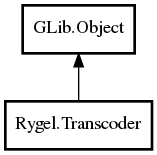

Transcoder
Object Hierarchy:

Description:
public abstract class Transcoder : Object
The base Transcoder class. Each implementation derives from it and must implement create_source() and get_distance().
Transcoders are obtained from rygel_media_engine_get_transcoders() and are only expected to support the derived #RygelDataSource types
provided by the same media engine.
Content:
Properties:
Creation methods:
Methods:
- public abstract DataSource create_source (MediaItem item, DataSource src) throws
Error
Creates a transcoding source.
- public virtual
DIDLLiteResource? add_resource (DIDLLiteItem didl_item, MediaItem item, TranscodeManager manager) throws Error
Derived classes should implement this function to fill a
GUPnPDIDLLiteResource, representing the transcoded content, with parameters specific to the transcoder, such as bitrate or resolution.
The GUPnPDIDLLiteResource should be instantiated by calling this base class implementation, passing the provided didl_item, item and
manager parameters.
- public
bool can_handle (string target)
Returns whether this trancoder can handle the specified DLNA profile.
This is determined by the #RygelTranscodeManager, which checks the suitability of each #RygelTranscoder by calling
rygel_transcoder_get_distance() with each #RygelMediaItem, choosing one DLNA profile for each transcoder to handle.
- public abstract
uint get_distance (MediaItem item)
Gets a numeric value that gives an gives an estimate of how hard it
would be for this transcoder to trancode @item to the target profile of this transcoder.
- protected
bool mime_type_is_a (string mime_type1, string mime_type2)
Inherited Members:
All known members inherited from class GLib.Object
- @new
- newv
- new_valist
- get_type
- get_class
- @ref
- unref
- ref_sink
- weak_ref
- weak_unref
- add_weak_pointer
- remove_weak_pointer
- @get
- @set
- get_property
- set_property
- get_data
- set_data
- set_data_full
- steal_data
- get_qdata
- set_qdata
- set_qdata_full
- steal_qdata
- freeze_notify
- thaw_notify
- dispose
- constructed
- notify_property
- connect
- disconnect
- add_toggle_ref
- remove_toggle_ref
- bind_property
- notify
- ref_count